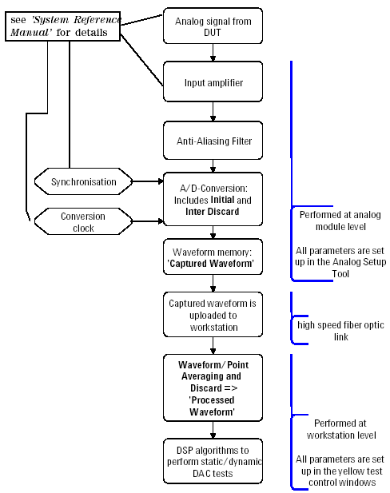

Signal Processing
The flowchart below illustrates the steps that are taken to process the signal given back from the analog DUT output pin of a DAC.

The flowchart below illustrates the steps that are taken to process the signal given back from the analog DUT output pin of a DAC.
